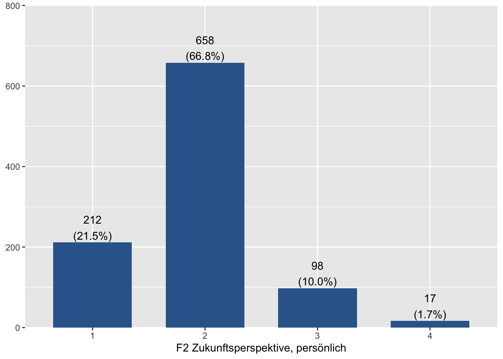

Kapitel 6 Deskriptive Statistik
In diesem Kapitel geht es um die deskriptive (beschreibende) Statistik. Mit dieser Art von Statistik kann man Aussagen treffen über die Verteilung von Merkmalen in Stichproben. Zum Testen von Hypothesen ist sie nicht geeignet, aber es ist in jedem Fall sinnvoll sich zunächst einen Überblick über die Verteilung von Variablen im Datensatz zu machen. Dazu ist deskriptive Statistik sehr hilfreich. In diesem Abschnitt werden deshalb die folgenden Themen behandelt: - Häufigkeitsverteilungen (inkl. Säulendiagram) - Maße der zentralen Tendenz und Streuung - Schiefe und Kurtosis - Funktionen zur Anzeige mehrere Kennwerte und mehrere Variablen
6.1 Häufigkeitsverteilung
6.1.1 Tabellen
Es gibt in den unterschiedlichen R-Paketen sehr viele Möglichkeiten, sich eine Häufigkeitsverteilung ausgeben zu lassen. Die schnellste und einfachste Möglichkeit ist die Funktion table(), die in base R verfügbar ist. Man kann sie also nutzen, ohne zusätzliche Pakete zu laden. Als Argument benötigt die Funktion lediglich einen Verweis auf den Vektor, der tabuliert werden soll (also auf den Datensatz und die entsprechende Variable).
# Häufigkeitstabelle, absolute Zahlen
table(data$zufriedenheit_leben)##
## Sehr zufrieden Zufrieden Weniger zufrieden Gar nicht zufrieden
## 209 647 131 9Das Ergebnis ist wirklich sehr basic. Es werden standardmäßig nur die absoluten Häufigkeiten ausgegeben und fehlende Werte werden weggelassen. Letztere kann man über das Argument useNA = "ifany" mit ausgeben lassen:
# Häufigkeitstabelle, absolute Zahlen
table(data$zufriedenheit_leben, useNA = "ifany")##
## Sehr zufrieden Zufrieden Weniger zufrieden Gar nicht zufrieden
## 209 647 131 9
## <NA>
## 10Neben dem sehr schlichten table()-Befehl gibt in vielen R-Paketen weitere Tabullierungs-Funktionen, mit denen man sich umfangreichere und übersichtlichere Häufigkeitstabellen ausgeben kann. Diese Funktionen unterscheiden sich jeweils leicht in den Informationen, die sie anzeigen. An dieser Stelle möchte ich beispielhaft die Funktion tabyl()aus dem Paket janitor vorstellen. Ich habe sie hier ausgewählt, weil ich das janitor-Paket zum Datenmanagement ohnehin häufig nutze und weil hier die Prozentwerte einmal mit und einmal ohne fehlende Werte ausgegeben werden.
library(janitor)##
## Attaching package: 'janitor'## The following objects are masked from 'package:sjmisc':
##
## remove_empty_cols, remove_empty_rows## The following objects are masked from 'package:stats':
##
## chisq.test, fisher.testtabyl(data$zukunftsperspektive_persoenlich)## data$zukunftsperspektive_persoenlich n percent valid_percent
## 1 212 0.21073559 0.21522843
## 2 658 0.65407555 0.66802030
## 3 98 0.09741551 0.09949239
## 4 17 0.01689861 0.01725888
## NA 21 0.02087475 NASchon sehr viel übersichtlicher und informativer! Allerdings fehlen noch Spalten für die kumulierten Prozentwerte. Diese Spalten können wir mit mutate() aus dem Tidyverse leicht selbst berechnen. Zusätzlich brauchen wir Funktion cumsum(), welche kumulierte Summen bildet.
library(tidyverse)
tabyl(data$zukunftsperspektive_persoenlich) %>%
# fügt Spalte für kumulierte Prozent und eine für kumulierte, gültige Prozent ein
mutate(cum_percent = cumsum(percent),
cum_valid_percent = cumsum(valid_percent)) ## data$zukunftsperspektive_persoenlich n percent valid_percent cum_percent
## 1 212 0.21073559 0.21522843 0.2107356
## 2 658 0.65407555 0.66802030 0.8648111
## 3 98 0.09741551 0.09949239 0.9622266
## 4 17 0.01689861 0.01725888 0.9791252
## NA 21 0.02087475 NA 1.0000000
## cum_valid_percent
## 0.2152284
## 0.8832487
## 0.9827411
## 1.0000000
## NAOkay, es geht noch schöner. Der folgende Code führt jetzt ziemlich weit, enthält zusätzlich zu den neuen Spalten auch noch eine Spalte mit den Wertelabels und sortiert die Spalten so, wie ich das gerne hätte.
library(janitor)
library(tidyverse)
tabyl(data$zukunftsperspektive_persoenlich) %>%
mutate(
# fügt Spalte für kumulierte Prozent ein:
cum_percent = cumsum(percent),
# fügt Spalte für kumulierte, gültige Prozent ein:
cum_valid_percent = cumsum(valid_percent),
# kopiert die Spalte Werte:
value = `data$zukunftsperspektive_persoenlich`,
# fügt in einer neuen Variable Wertelabels ein:
zukunftsperspektive_persoenlich = sjlabelled::get_labels(data$zukunftsperspektive_persoenlich)) %>%
# sortiert die Spalten neu:
select(zukunftsperspektive_persoenlich, value, n, percent, cum_percent, valid_percent, cum_valid_percent)## zukunftsperspektive_persoenlich value n percent cum_percent valid_percent
## Sehr gut 1 212 0.21073559 0.2107356 0.21522843
## Gut 2 658 0.65407555 0.8648111 0.66802030
## Weniger gut 3 98 0.09741551 0.9622266 0.09949239
## Schlecht 4 17 0.01689861 0.9791252 0.01725888
## Weiß nicht NA 21 0.02087475 1.0000000 NA
## cum_valid_percent
## 0.2152284
## 0.8832487
## 0.9827411
## 1.0000000
## NA6.1.2 Häufigkeitsdiagramm
Statistische Grafiken/Plots sind in R flexibel gestaltbar und können in Druckqualität ausgegeben werden. Im späteren Kapitel Darstellung gehe ich nochmal genau darauf ein, wie man Grafiken hübsch machen kann. Darum geht es an dieser Stelle aber noch nicht. Denn im Rahmen der Exploration von Datensätzen ist es zunächst erstmal wichtig, dass Sie die Grafik dazu benutzen, sich einen Überblick zu verschaffen! Eine besonders ausgefeilte - und möglicherweise aufwendige Formatierung - ist an dieser Stelle nicht nötig.
Zur Erstellung von Plots ist das Paket ggplot aus dem Tidyverse mittlerweile ein ziemlicher Standard. Leider ist die Syntax etwas ungelenk und es ist etwas herausfordernd, damit tatsächlich schöne Grafiken zu bauen. Wenn man Grafiken später in einen Forschungsbericht einbauen möchte lohnt es sich auf jeden Fall in ggplot einzusteigen und ich werde den Umgang mit dem Paket in einem späteren Kapitel auch noch vorstellen. Für die explorative Analyse und den schnellen Überblick eignet sich das Paket sjPlot sehr gut, weil es ohne viele Befehle akzeptable Grafiken produziert. Es basiert im Hintergrund auf ggplot2, übernimmt aber das Formatieren vollautomatisch. Die Syntax für ein Säulendiagramm, wie wir es für unsere Häufigkeitsauszählung benötigen ist deshalb sehr simpel:
library(sjPlot)
plot_frq(data$zukunftsperspektive_persoenlich)
Über die Funktion plot_frq() sind noch weitere Darstellungsformen möglich, wie bspw. ein Linien-Diagramm oder ein Diagramm mit Punkten. Man muss dazu lediglich das zusätzliche Argument type mit an die Funktion übergeben (z.B. type = "line" oder type = "dot"). Auch Histogramme sind möglich (type = "histogram), aber dazu später mehr.
6.2 Maße der zentralen Tendenz & Streuung
Neben Häufigkeitsauszählungen dienen Maße der zentralen Tendenz und Streuung dazu, die Eigenschaften von Variablen sehr kompakt zu beschreiben. Ich ordne die Maßzahlen hier nach Datenniveau, beginnend bei niedrigsten bis zum höchsten. Selbstverständlich können Sie die Maße für ein niedrigeres Datenniveau auch für höhere Datenniveaus anwenden. Umgekehrt ist das jedoch nicht sinnvoll! Allerdings kennt R das Datenniveau der Variablen nicht. Es wird also ohne Probleme und Fehlermeldung auch ein arithmetisches Mittel für eine nominale Variable ausgeben. Das Denken kann uns R an dieser Stelle also leider nicht abnehmen. Wir müssen immer selbst vorab beurteilen, ob eine Berechnung sinnvoll ist oder nicht.
6.2.1 Nominale Daten
Als Beispiel für eine nominale Variable verwende ich die Frage, aus welchem Personenkreis die Vorbilder der Befragten kommen, sofern sie Vorbilder haben. Die Variable hat die folgenden Ausprägungen:
sjlabelled::get_labels(data$vorbild_codiert)## [1] "Eltern" "andere Familienangehörige"
## [3] "Musiker" "Sportler"
## [5] "religiöse Vorbilder" "sonstige Promis"
## [7] "Influencer" "Sonstiges"
## [9] "Weiß nicht"Der Modus ist der Wert in einer Verteilung, der am häufigsten vorkommt. Da die Reihenfolge der Ausprägungen dabei keine Rolle spielt, ist er sogar für nominale Daten anwendbar. Man kann ihn aber auch für ordinale und metrische Daten ermitteln.
Für den Modus gibt es in base-R keine Standard-Funktion, vielleicht ist er einfach zu simpel. Man kann den Modus einfach über eine Häufigkeitsauszählung ermitteln oder über ein Säulendiagram (siehe voriger Abschnitt).
Alternativ gibt es noch eine Mode()-Funktion im DescTools-Paket. Achtung! Das Paket ist etwas altmodisch bei der Benennung seiner Funktionen: Mode() muss hier zwingend groß geschrieben werden!!
library(DescTools)##
## Attaching package: 'DescTools'## The following object is masked from 'package:sjmisc':
##
## %nin%Mode(data$vorbild_codiert, na.rm = TRUE)## [1] 1
## attr(,"freq")
## [1] 136Die Funktion liefert gleich zwei Ergebnisse zurück: Zum einen den Wert, der die meisten Ausprägungen auf sich vereint, in diesem Fall die Ausprägung “1” (Modus = 1). Zum anderen die absolute Häufigkeit, die diese Ausprägung hat (n). Aus der Liste der Wertelabels oben wissen wir, dass es sich bei 1 um die “Eltern” handelt.
6.2.2 Ordinale Daten
Der Median teilt die (sortierten) Fälle einer Variablen in zwei gleich große Hälften. Er kann für ordinale und metrische Daten berechnet werden.
Die Funktion für den Median gibt es sogar in base-R. Sie heißt schlicht median(). Die Funktion benötigt zwei Argumente. Zum einen selbstverständlich den Verweis auf die Variable und zum anderen einen Hinweis, wie mit fehlenden Werten umgegangen werden soll. Da R nicht wissen kann, wie fehlende Werte einzuberechnen wären müssen sie vorab aus der Analyse entfernt werden, mit na.rm = TRUE (NA remove).
median(data$zufriedenheit_leben, na.rm = TRUE)## [1] 2Die Spannweite (range) gibt an, zwischen welchen Ausprägungen sich eine Variable bewegt also den höchsten und den niedrigsten Wert.
range(data$zufriedenheit_leben, na.rm = TRUE)## [1] 1 4Über die Funktionen min() und max() kann man sich übrigens auch einzeln das Minimum bzw. Maximum ausgeben lassen.
Wie oben erwähnt teilt der Median die Verteilung der Werte in zwei gleiche Hälften. Wenn man jedoch nicht zwei Hälften haben möchte sondern sich eher für Drittel, Viertel oder Fünftel interessiert, sind Quantile das Mittel der Wahl. Üblich sind eigentlich nur Quartile, also die Einteilung in Viertel. Deshalb gibt die base-R-Funktion quantile() standardmäßig die Grenzen der Quartile zurück.
quantile(data$alter, na.rm = TRUE)## 0% 25% 50% 75% 100%
## 14 16 19 22 24Es handelt sich um 5 Grenzen, weil der niedrigste und der hächste Wert mit ausgegeben werden. Die Quartile befinden sich quasi “zwischen” diesen 5 Grenzpunkten.
Der **Interquartil-Abstand* gibt den Abstand zwischen dem Ende des ersten und dem Beginn des letzten Quartils an, Also in unserem Beispiel den Abstand zwischen den Ausprägungen 16 und 22 Jahre (= 6 Jahre).
IQR(data$alter, na.rm = TRUE)## [1] 66.2.3 Metrische Daten
Für metrische Variablen können haben Sie die Auswahl zwischen allen hier vorgestellten Maßen der zentralen Tendenz. Üblich ist aber vor allem das “arithmetische Mittel”, umgangssprachlich oft auch als Durchschnitt oder Mittelwert bezeichnet. Die Funktion mean() habe ich in den Einführungskapiteln bereits als Beispiel genutzt.
mean(data$alter, na.rm = TRUE)## [1] 19.12823Der Altersdurchschnitt im Sample beträgt also 19,1 Jahre.
Bei dieser Variable ist es nicht sinnvoll, aber mit mean() kann man sich auch ein getrimmtes Mittel ausgeben lassen, bei dem die oberen uns niedrigen X Prozent der Daten entfernt werden. So kann das arithmetische Mittel robust gemacht werden gegen Extremwerte (die es in dieser Variable nicht gibt).
mean(data$alter, trim = 0.1, na.rm = TRUE)## [1] 19.15261Es macht Sinn, sich bei einer Variable nie allein das arithmetische Mittel anzusehen. Sie wüssten dann z.B. nicht ob ein Wert (z.B. 19 Jahre) nur erreicht wird, weil alle . Wie der Name schon sagt, geben Streuungsmaße Auskunft darüber, wie die Werte einer Variablen um den Mittelwert streuen oder variieren. Das wichtigste Streuungsmaß, welches auch immer gemeinsam mit dem arithmetischen Mittel angesehen und berichtet werden sollte ist die Streuung (standard deviation).
sd(data$alter, na.rm = TRUE)## [1] 3.177417Die Streuung ist bekanntlich die Wurzel der Varianz und als Streuungsmaß auch um einiges üblicher. Dennoch soll hier natürlich auch die Funktion für die Varianz nicht fehlen:
var(data$alter, na.rm = TRUE)## [1] 10.095986.3 Schiefe und Kurtosis
Weitere Kennwerte für die Form von Verteilungen sind die Schiefe (skew) und Kurtosis (kurtosis). Die Schiefe ist quasi das Gegenteil von Symmetrie. Kurtosis drückt aus wie spitz (nach oben gewölbt) oder flach eine Verteilung ist.
Im psych-Paket gibt es Funktionen für beides:
psych::skew(data$alter, na.rm = TRUE)## [1] -0.06328724Zur Erinnerung:
Ist die Schiefe > 0 so ist die Verteilung rechtsschief (Modus < Median < arithmetisches Mittel).
Ist die Schiefe = 0, so ist die Verteilung symetrisch (Modus = Median = arithmetisches Mittel).
Ist die Schiefe < 0 so ist die Verteilung linksschief (Modus > Median > arithmetisches Mittel).
Die Verteilung des Alters im obigen Beispiel ist also nahezu symmetrisch, ein wenig linksschief.
Hier noch der Code zur Berechnung der Kurtosis:
psych::kurtosi(data$alter, na.rm = TRUE)## [1] -1.2500036.4 Übersichts-Funktionen
Bisher haben wir uns die Statistiken jeweils für eine einzelne Variable ausgeben lassen. Aber natürlich macht es Sinn, sich mehrere Kennwerte gleichzeitig ausgeben zu lassen. Die Funktion summary() aus dem base-Paket liefert zum Beispiel einen ersten guten Einblick:
summary(data$alter)## Min. 1st Qu. Median Mean 3rd Qu. Max.
## 14.00 16.00 19.00 19.13 22.00 24.00Allerdings fehlen an dieser Stelle z.B. die Streuungsmaße. Es geht also noch mehr. Das vorhin genutzte psych-Paket hat z.B. eine describe()-Funktion, mit der man sich gleichzeitig verschiedene deskriptive Statistiken ausgeben kann - und zwar nicht nur für eine Variable, sondern gleich für mehrere oder sogar für einen ganzen Datensatz.
psych::describe(data)## vars n mean sd
## za_nr 1 1006 6738.00 0.00
## version* 2 1006 NaN NA
## doi* 3 1006 NaN NA
## lfdn 4 1006 2314.19 407.58
## zufriedenheit_leben 5 996 1.94 0.61
## zukunftsperspektive_persoenlich 6 985 1.92 0.61
## zukunftsperspektive_generation 7 984 2.46 0.71
## eltern_verhaeltnis 8 1004 1.53 0.72
## eltern_unterstuetzung 9 999 1.62 0.80
## eltern_ratgeber 10 997 2.06 0.86
## eltern_diskutieren 11 996 2.33 0.95
## eltern_zuhoerer 12 996 1.79 0.82
## bildung_vater 13 911 2.08 0.77
## bildung_mutter 14 947 2.07 0.71
## finanz_verzicht 15 998 2.27 0.84
## geld_eigene_arbeit 16 1006 0.64 0.48
## geld_eltern 17 1006 0.54 0.50
## geld_staat 18 1006 0.15 0.35
## geld_sonstige 19 1006 0.09 0.28
## geld_weiss_nicht 20 1006 0.00 0.06
## geld_hauptsaechlich 21 997 1.62 0.74
## vorbild_ja 22 793 1.50 0.50
## vorbild_welches 23 338 1.00 0.00
## vorbild_codiert 24 334 3.43 2.77
## fokus_leben_individualitaet 25 1006 0.27 0.44
## fokus_leben_freiheit 26 1006 0.42 0.49
## fokus_leben_hedonismus 27 1006 0.53 0.50
## fokus_leben_karriere 28 1006 0.21 0.41
## fokus_leben_altruismus 29 1006 0.35 0.48
## fokus_leben_verantwortung 30 1006 0.21 0.41
## fokus_leben_durchsetzung 31 1006 0.07 0.26
## fokus_leben_toleranz 32 1006 0.15 0.35
## fokus_leben_gesundheit 33 1006 0.21 0.41
## fokus_leben_umwelt 34 1006 0.24 0.43
## fokus_leben_finanzen 35 1006 0.59 0.49
## fokus_leben_luxus 36 1006 0.30 0.46
## fokus_leben_respekt 37 1006 0.16 0.37
## fokus_leben_unangepasstheit 38 1006 0.10 0.30
## fokus_leben_vernatwortungsvoller_konsum 39 1006 0.09 0.29
## fokus_leben_kein 40 1006 0.00 0.04
## fokus_beruf_sicherheit 41 998 1.64 0.77
## fokus_beruf_einkommen 42 1005 1.71 0.74
## fokus_beruf_interesse 43 1005 1.51 0.70
## fokus_beruf_work_life_balance 44 990 1.80 0.85
## fokus_beruf_karriere 45 992 2.38 0.96
## fokus_beruf_verantwortung 46 991 2.32 0.92
## fokus_beruf_entwicklung 47 994 2.09 0.88
## werte_sicherheit_vs_privatsphaere 48 973 3.85 1.81
## werte_sm_provatsphaere_vs_sm_socialising 49 990 4.38 1.72
## werte_moeglichkeiten_vs_ueberforderung 50 983 2.99 1.65
## werte_gesundheit_vs_spass 51 993 3.74 1.74
## werte_individualitaet_vs_sozialitaet 52 989 4.06 1.86
## werte_nachhaltigkeit_vs_konsum 53 990 3.93 1.80
## werte_leistung_vs_solidaritaet 54 957 4.37 1.80
## werte_chancengleichheit_vs_elite 55 972 2.67 1.75
## werte_zukunft_vs_vergangenheit 56 986 3.09 1.91
## werte_gleichstellungspolitik 57 977 4.41 2.07
## verbundenheit_stadt 58 986 2.38 0.84
## verbundenheit_region 59 978 2.34 0.84
## verbundenheit_bundesland 60 971 2.39 0.88
## verbundenheit_deutschland 61 974 2.08 0.82
## verbundenheit_europa 62 951 2.28 0.90
## sm_nutzung 63 1005 2.09 0.88
## sm_nutzung_rang_facebook 64 997 1.37 1.65
## sm_nutzung_rang_instagram 65 997 1.30 1.05
## sm_nutzung_rang_twitter 66 997 0.76 1.74
## sm_nutzung_rang_youtube 67 997 1.89 1.32
## sm_nutzung_rang_linked_in 68 997 0.45 1.71
## sm_nutzung_rang_xing 69 997 0.51 1.80
## sm_nutzung_rang_tumbler 70 997 0.52 1.79
## sm_nutzung_rang_reddit 71 997 0.46 1.76
## sm_nutzung_rang_snapchat 72 997 1.63 1.89
## sm_nutzung_rang_tiktok 73 997 0.69 2.03
## sm_nutzung_rang_twitch 74 997 0.71 2.12
## sm_nutzung_socializing 75 997 0.66 0.47
## sm_nutzung_tagesgeschehen 76 997 0.53 0.50
## sm_nutzung_neue_kontakte 77 997 0.22 0.41
## sm_nutzung_organisation 78 997 0.42 0.49
## sm_nutzung_promies 79 997 0.40 0.49
## sm_nutzung_marken 80 997 0.26 0.44
## sm_nutzung_zeitvertreib 81 997 0.84 0.37
## sm_nutzung_bildung 82 588 0.39 0.49
## sm_nutzung_weiss_nicht 83 997 0.01 0.07
## politisches_interesse 84 999 2.57 0.87
## touchpoints_politik_arbeit_schule_uni 85 997 2.20 0.86
## touchpoints_politik_freunde_familie 86 1003 2.27 0.80
## touchpoints_politik_soziale_netzwerke 87 1000 2.24 0.88
## touchpoints_politik_freizeit 88 986 2.98 0.88
## touchpoints_politik_oeffentlicher_raum 89 994 2.71 0.85
## touchpoints_politik_medien 90 998 1.96 0.85
## mediennutzung_politik 91 992 2.99 1.24
## infoquelle_tv_nachrichten 92 893 0.40 0.49
## infoquelle_talkshows 93 893 0.07 0.26
## infoquelle_websites_institutionen_behoerden 94 893 0.08 0.27
## infoquelle_tv_satiere 95 893 0.16 0.37
## infoquelle_print 96 893 0.18 0.39
## infoquelle_internet_nachrichten 97 893 0.35 0.48
## infoquelle_radio_podcast 98 893 0.24 0.43
## infoquelle_nachrichten_app 99 893 0.25 0.43
## infoquelle_politik_blog 100 893 0.02 0.13
## infoquelle_newsletter_messanger_abo 101 893 0.03 0.18
## infoquelle_google 102 893 0.36 0.48
## infoquelle_instagram 103 893 0.15 0.36
## infoquelle_youtube 104 893 0.26 0.44
## infoquelle_twitter 105 893 0.05 0.22
## infoquelle_facebook 106 893 0.19 0.40
## infoquelle_snapchat 107 893 0.04 0.19
## infoquelle_sonstige_offen 108 893 0.02 0.14
## vertrauen_medien_tv_nachrichten 109 353 2.07 0.69
## vertrauen_medien_talkshows 110 60 2.12 0.76
## vertrauen_medien_websites_institutionen_behoerden 111 68 1.93 0.78
## vertrauen_medien_tv_satiere 112 141 2.01 0.77
## vertrauen_medien_print 113 160 1.93 0.73
## vertrauen_medien_internet_nachrichten 114 306 2.04 0.67
## vertrauen_medien_radio_podcast 115 211 2.03 0.66
## vertrauen_medien_nachrichten_app 116 217 1.72 0.73
## vertrauen_medien_politik_blog 117 15 2.40 0.63
## vertrauen_medien_newsletter_messanger_abo 118 31 2.23 0.67
## vertrauen_medien_google 119 308 2.29 0.72
## vertrauen_medien_instagram 120 132 2.47 0.71
## vertrauen_medien_youtube 121 229 2.28 0.72
## vertrauen_medien_twitter 122 47 2.26 0.67
## vertrauen_medien_facebook 123 169 2.62 0.77
## vertrauen_medien_snapchat 124 33 2.85 0.71
## vertrauen_medien_sonstige_offen 125 13 2.00 0.91
## politik_demokratie_zufriedenheit 126 945 2.57 0.78
## politik_demokratie_idee 127 918 1.12 0.32
## politik_reformbedarf 128 924 1.87 0.60
## politik_regierungszufriedenheit 129 943 2.80 0.74
## vertrauen_institutionen_justiz 130 957 2.30 0.83
## vertrauen_institutionen_ngos 131 917 2.43 0.91
## vertrauen_institutionen_vereine 132 882 2.55 0.79
## vertrauen_institutionen_bundesregierung 133 935 2.77 0.80
## vertrauen_institutionen_parteien 134 922 2.98 0.71
## vertrauen_institutionen_bundestag 135 914 2.77 0.81
## vertrauen_institutionen_polizei 136 987 2.12 0.81
## vertrauen_institutionen_kirchen 137 929 3.31 0.84
## vertrauen_institutionen_schule_uni 138 965 2.28 0.75
## parteisympathie 139 685 5.64 2.33
## einstellung_politiker_nehmen_sorgen_ernst 140 964 3.13 0.76
## einstellung_politiker_verstaendlich 141 970 2.45 0.90
## einstellung_politiker_kommunikationskanaele 142 932 2.19 0.88
## einstellung_talkshows_junge_menchen 143 823 2.94 0.71
## einstellung_entscheidungsprozess_undurchsichtig 144 954 2.21 0.80
## einstellung_politik_wichtige_probleme 145 965 3.08 0.76
## einstellung_politik_einflussmoeglichkeit 146 962 2.84 0.82
## einstellung_keine_ueberzeugende_partei 147 923 2.37 0.93
## einstellung_politik_lebensfern 148 953 2.94 0.94
## einstellung_politik_wirtschaftsinteressen 149 924 1.86 0.77
## einstellung_widerspruch_klima_kapitalismus 150 828 2.34 0.88
## einstellung_parteien_macht 151 944 1.93 0.80
## germany_first 152 926 2.27 0.85
## meinung_eu_vorteile_deutschlend 153 855 2.11 0.88
## meinung_eu_wohlstand 154 880 2.09 0.82
## meinung_eu_anti_souveraenitaet 155 882 2.54 0.90
## meinung_eu_gute_idee_schlechte_umsetzung 156 893 2.10 0.77
## meinung_eu_problemloesungsebene 157 875 2.11 0.85
## pol_partizipation_wahl 158 650 0.70 0.46
## pol_partizipation_petition 159 1006 0.32 0.47
## pol_partizipation_sm_kommentar 160 1006 0.15 0.36
## pol_partizipation_partei_veranstaltung 161 1006 0.08 0.28
## pol_partizipation_demo 162 1006 0.13 0.33
## pol_partizipation_information 163 1006 0.58 0.49
## pol_partizipation_gespraech 164 1006 0.63 0.48
## pol_partizipation_produktboykott 165 1006 0.26 0.44
## pol_partizipation_parteiengagement 166 1006 0.04 0.19
## pol_partizipation_anderes_engagement 167 1006 0.05 0.21
## pol_partizipation_nichts_davon 168 1006 0.18 0.39
## ehrenamt_allgemein 169 968 1.74 0.44
## ehrenamt_spezifisch 170 235 1.00 0.00
## ehrenamt_codiert 171 234 4.07 2.76
## fff_interesse 172 981 2.46 1.00
## fff_teilnahme 173 991 4.36 0.92
## reaktionen_fff_agendasetting 174 963 1.86 0.81
## reaktionen_fff_berichterstattung_positiv 175 859 2.44 0.75
## reaktionen_fff_mangelnde_berichterstattung 176 916 2.60 0.99
## reaktionen_fff_politiker_untaetigkeit 177 877 1.85 0.78
## reaktionen_fff_schulzeit_aufmerksamkeit 178 946 2.21 1.10
## reaktionen_fff_schulstreik_ungeeignet 179 949 2.58 1.08
## reaktionen_fff_teilnehmer_schwaenzen 180 923 2.58 1.03
## reaktionen_fff_konsumverzicht 181 963 2.70 0.99
## reaktionen_fff_elternunterstuetzung 182 118 1.86 0.82
## alter 183 1006 19.13 3.18
## geschlecht 184 1006 1.48 0.50
## bundesland 185 1006 7.09 3.41
## bildung_derzeit 186 1006 1.41 0.49
## bildung_schule 187 593 3.57 1.16
## bildung_abschluss 188 527 3.27 0.98
## erwerbstaetigkeit 189 387 2.22 2.01
## wohnsituation 190 986 1.33 0.47
## gemeindegroesse 191 932 3.34 1.75
## migrationshintergrund 192 993 3.69 0.68
## Gewicht 193 1006 1.00 0.18
## filter_$ 194 1006 0.89 0.32
## median trimmed mad
## za_nr 6738.00 6738.00 0.00
## version* NA NaN NA
## doi* NA NaN NA
## lfdn 2309.00 2307.73 517.43
## zufriedenheit_leben 2.00 1.91 0.00
## zukunftsperspektive_persoenlich 2.00 1.88 0.00
## zukunftsperspektive_generation 2.00 2.45 1.48
## eltern_verhaeltnis 1.00 1.41 0.00
## eltern_unterstuetzung 1.00 1.47 0.00
## eltern_ratgeber 2.00 1.98 1.48
## eltern_diskutieren 2.00 2.29 1.48
## eltern_zuhoerer 2.00 1.68 1.48
## bildung_vater 2.00 2.10 1.48
## bildung_mutter 2.00 2.09 1.48
## finanz_verzicht 2.00 2.24 1.48
## geld_eigene_arbeit 1.00 0.67 0.00
## geld_eltern 1.00 0.55 0.00
## geld_staat 0.00 0.06 0.00
## geld_sonstige 0.00 0.00 0.00
## geld_weiss_nicht 0.00 0.00 0.00
## geld_hauptsaechlich 1.00 1.50 0.00
## vorbild_ja 1.00 1.50 0.00
## vorbild_welches 1.00 1.00 0.00
## vorbild_codiert 2.00 3.04 1.48
## fokus_leben_individualitaet 0.00 0.21 0.00
## fokus_leben_freiheit 0.00 0.40 0.00
## fokus_leben_hedonismus 1.00 0.54 0.00
## fokus_leben_karriere 0.00 0.14 0.00
## fokus_leben_altruismus 0.00 0.32 0.00
## fokus_leben_verantwortung 0.00 0.13 0.00
## fokus_leben_durchsetzung 0.00 0.00 0.00
## fokus_leben_toleranz 0.00 0.06 0.00
## fokus_leben_gesundheit 0.00 0.13 0.00
## fokus_leben_umwelt 0.00 0.18 0.00
## fokus_leben_finanzen 1.00 0.61 0.00
## fokus_leben_luxus 0.00 0.25 0.00
## fokus_leben_respekt 0.00 0.08 0.00
## fokus_leben_unangepasstheit 0.00 0.00 0.00
## fokus_leben_vernatwortungsvoller_konsum 0.00 0.00 0.00
## fokus_leben_kein 0.00 0.00 0.00
## fokus_beruf_sicherheit 1.00 1.53 0.00
## fokus_beruf_einkommen 2.00 1.62 1.48
## fokus_beruf_interesse 1.00 1.39 0.00
## fokus_beruf_work_life_balance 2.00 1.70 1.48
## fokus_beruf_karriere 2.00 2.34 1.48
## fokus_beruf_verantwortung 2.00 2.27 1.48
## fokus_beruf_entwicklung 2.00 2.04 1.48
## werte_sicherheit_vs_privatsphaere 4.00 3.82 1.48
## werte_sm_provatsphaere_vs_sm_socialising 5.00 4.45 1.48
## werte_moeglichkeiten_vs_ueberforderung 3.00 2.82 1.48
## werte_gesundheit_vs_spass 4.00 3.72 1.48
## werte_individualitaet_vs_sozialitaet 4.00 4.07 2.97
## werte_nachhaltigkeit_vs_konsum 4.00 3.91 1.48
## werte_leistung_vs_solidaritaet 4.00 4.43 2.97
## werte_chancengleichheit_vs_elite 2.00 2.43 1.48
## werte_zukunft_vs_vergangenheit 2.00 2.89 1.48
## werte_gleichstellungspolitik 4.00 4.51 2.97
## verbundenheit_stadt 2.00 2.35 1.48
## verbundenheit_region 2.00 2.31 1.48
## verbundenheit_bundesland 2.00 2.37 1.48
## verbundenheit_deutschland 2.00 2.04 1.48
## verbundenheit_europa 2.00 2.23 1.48
## sm_nutzung 2.00 1.96 0.00
## sm_nutzung_rang_facebook 1.00 1.12 1.48
## sm_nutzung_rang_instagram 1.00 1.19 1.48
## sm_nutzung_rang_twitter 0.00 0.30 0.00
## sm_nutzung_rang_youtube 2.00 1.83 1.48
## sm_nutzung_rang_linked_in 0.00 0.00 0.00
## sm_nutzung_rang_xing 0.00 0.00 0.00
## sm_nutzung_rang_tumbler 0.00 0.00 0.00
## sm_nutzung_rang_reddit 0.00 0.00 0.00
## sm_nutzung_rang_snapchat 1.00 1.36 1.48
## sm_nutzung_rang_tiktok 0.00 0.11 0.00
## sm_nutzung_rang_twitch 0.00 0.09 0.00
## sm_nutzung_socializing 1.00 0.70 0.00
## sm_nutzung_tagesgeschehen 1.00 0.54 0.00
## sm_nutzung_neue_kontakte 0.00 0.15 0.00
## sm_nutzung_organisation 0.00 0.40 0.00
## sm_nutzung_promies 0.00 0.38 0.00
## sm_nutzung_marken 0.00 0.20 0.00
## sm_nutzung_zeitvertreib 1.00 0.93 0.00
## sm_nutzung_bildung 0.00 0.36 0.00
## sm_nutzung_weiss_nicht 0.00 0.00 0.00
## politisches_interesse 3.00 2.59 1.48
## touchpoints_politik_arbeit_schule_uni 2.00 2.16 1.48
## touchpoints_politik_freunde_familie 2.00 2.26 1.48
## touchpoints_politik_soziale_netzwerke 2.00 2.19 1.48
## touchpoints_politik_freizeit 3.00 3.06 1.48
## touchpoints_politik_oeffentlicher_raum 3.00 2.73 1.48
## touchpoints_politik_medien 2.00 1.89 1.48
## mediennutzung_politik 3.00 2.98 1.48
## infoquelle_tv_nachrichten 0.00 0.37 0.00
## infoquelle_talkshows 0.00 0.00 0.00
## infoquelle_websites_institutionen_behoerden 0.00 0.00 0.00
## infoquelle_tv_satiere 0.00 0.08 0.00
## infoquelle_print 0.00 0.10 0.00
## infoquelle_internet_nachrichten 0.00 0.31 0.00
## infoquelle_radio_podcast 0.00 0.17 0.00
## infoquelle_nachrichten_app 0.00 0.18 0.00
## infoquelle_politik_blog 0.00 0.00 0.00
## infoquelle_newsletter_messanger_abo 0.00 0.00 0.00
## infoquelle_google 0.00 0.32 0.00
## infoquelle_instagram 0.00 0.07 0.00
## infoquelle_youtube 0.00 0.21 0.00
## infoquelle_twitter 0.00 0.00 0.00
## infoquelle_facebook 0.00 0.12 0.00
## infoquelle_snapchat 0.00 0.00 0.00
## infoquelle_sonstige_offen 0.00 0.00 0.00
## vertrauen_medien_tv_nachrichten 2.00 2.06 0.00
## vertrauen_medien_talkshows 2.00 2.08 0.00
## vertrauen_medien_websites_institutionen_behoerden 2.00 1.86 0.00
## vertrauen_medien_tv_satiere 2.00 1.97 1.48
## vertrauen_medien_print 2.00 1.88 0.00
## vertrauen_medien_internet_nachrichten 2.00 2.04 0.00
## vertrauen_medien_radio_podcast 2.00 2.02 0.00
## vertrauen_medien_nachrichten_app 2.00 1.63 1.48
## vertrauen_medien_politik_blog 2.00 2.46 1.48
## vertrauen_medien_newsletter_messanger_abo 2.00 2.28 0.00
## vertrauen_medien_google 2.00 2.33 1.48
## vertrauen_medien_instagram 3.00 2.55 0.00
## vertrauen_medien_youtube 2.00 2.32 1.48
## vertrauen_medien_twitter 2.00 2.31 1.48
## vertrauen_medien_facebook 3.00 2.64 0.00
## vertrauen_medien_snapchat 3.00 2.81 1.48
## vertrauen_medien_sonstige_offen 2.00 1.91 1.48
## politik_demokratie_zufriedenheit 2.00 2.53 1.48
## politik_demokratie_idee 1.00 1.03 0.00
## politik_reformbedarf 2.00 1.83 0.00
## politik_regierungszufriedenheit 3.00 2.78 1.48
## vertrauen_institutionen_justiz 2.00 2.28 1.48
## vertrauen_institutionen_ngos 2.00 2.41 1.48
## vertrauen_institutionen_vereine 3.00 2.53 1.48
## vertrauen_institutionen_bundesregierung 3.00 2.77 1.48
## vertrauen_institutionen_parteien 3.00 3.00 0.00
## vertrauen_institutionen_bundestag 3.00 2.78 1.48
## vertrauen_institutionen_polizei 2.00 2.08 0.00
## vertrauen_institutionen_kirchen 4.00 3.43 0.00
## vertrauen_institutionen_schule_uni 2.00 2.27 0.00
## parteisympathie 7.00 5.85 1.48
## einstellung_politiker_nehmen_sorgen_ernst 3.00 3.21 0.00
## einstellung_politiker_verstaendlich 2.00 2.43 1.48
## einstellung_politiker_kommunikationskanaele 2.00 2.13 1.48
## einstellung_talkshows_junge_menchen 3.00 2.95 0.00
## einstellung_entscheidungsprozess_undurchsichtig 2.00 2.19 1.48
## einstellung_politik_wichtige_probleme 3.00 3.13 1.48
## einstellung_politik_einflussmoeglichkeit 3.00 2.88 1.48
## einstellung_keine_ueberzeugende_partei 2.00 2.34 1.48
## einstellung_politik_lebensfern 3.00 3.04 1.48
## einstellung_politik_wirtschaftsinteressen 2.00 1.79 1.48
## einstellung_widerspruch_klima_kapitalismus 2.00 2.31 1.48
## einstellung_parteien_macht 2.00 1.88 1.48
## germany_first 3.00 2.34 0.00
## meinung_eu_vorteile_deutschlend 2.00 2.04 1.48
## meinung_eu_wohlstand 2.00 2.04 0.00
## meinung_eu_anti_souveraenitaet 3.00 2.55 1.48
## meinung_eu_gute_idee_schlechte_umsetzung 2.00 2.08 0.00
## meinung_eu_problemloesungsebene 2.00 2.06 1.48
## pol_partizipation_wahl 1.00 0.74 0.00
## pol_partizipation_petition 0.00 0.28 0.00
## pol_partizipation_sm_kommentar 0.00 0.06 0.00
## pol_partizipation_partei_veranstaltung 0.00 0.00 0.00
## pol_partizipation_demo 0.00 0.03 0.00
## pol_partizipation_information 1.00 0.61 0.00
## pol_partizipation_gespraech 1.00 0.66 0.00
## pol_partizipation_produktboykott 0.00 0.20 0.00
## pol_partizipation_parteiengagement 0.00 0.00 0.00
## pol_partizipation_anderes_engagement 0.00 0.00 0.00
## pol_partizipation_nichts_davon 0.00 0.11 0.00
## ehrenamt_allgemein 2.00 1.79 0.00
## ehrenamt_spezifisch 1.00 1.00 0.00
## ehrenamt_codiert 3.00 3.85 2.97
## fff_interesse 2.00 2.45 1.48
## fff_teilnahme 5.00 4.55 0.00
## reaktionen_fff_agendasetting 2.00 1.78 1.48
## reaktionen_fff_berichterstattung_positiv 2.00 2.44 1.48
## reaktionen_fff_mangelnde_berichterstattung 3.00 2.62 1.48
## reaktionen_fff_politiker_untaetigkeit 2.00 1.77 1.48
## reaktionen_fff_schulzeit_aufmerksamkeit 2.00 2.14 1.48
## reaktionen_fff_schulstreik_ungeeignet 3.00 2.60 1.48
## reaktionen_fff_teilnehmer_schwaenzen 3.00 2.60 1.48
## reaktionen_fff_konsumverzicht 3.00 2.74 1.48
## reaktionen_fff_elternunterstuetzung 2.00 1.75 1.48
## alter 19.00 19.15 4.45
## geschlecht 1.00 1.48 0.00
## bundesland 7.00 6.82 2.97
## bildung_derzeit 1.00 1.39 0.00
## bildung_schule 3.00 3.58 1.48
## bildung_abschluss 3.00 3.22 1.48
## erwerbstaetigkeit 1.00 1.79 0.00
## wohnsituation 1.00 1.29 0.00
## gemeindegroesse 3.00 3.30 2.97
## migrationshintergrund 4.00 3.88 0.00
## Gewicht 0.99 0.99 0.15
## filter_$ 1.00 0.98 0.00
## min max range skew
## za_nr 6738.00 6738.00 0.00 NaN
## version* Inf -Inf -Inf NA
## doi* Inf -Inf -Inf NA
## lfdn 1634.00 3082.00 1448.00 0.09
## zufriedenheit_leben 1.00 4.00 3.00 0.27
## zukunftsperspektive_persoenlich 1.00 4.00 3.00 0.49
## zukunftsperspektive_generation 1.00 4.00 3.00 0.17
## eltern_verhaeltnis 1.00 4.00 3.00 1.40
## eltern_unterstuetzung 1.00 4.00 3.00 1.31
## eltern_ratgeber 1.00 4.00 3.00 0.60
## eltern_diskutieren 1.00 4.00 3.00 0.23
## eltern_zuhoerer 1.00 4.00 3.00 0.92
## bildung_vater 1.00 3.00 2.00 -0.14
## bildung_mutter 1.00 3.00 2.00 -0.10
## finanz_verzicht 1.00 4.00 3.00 0.21
## geld_eigene_arbeit 0.00 1.00 1.00 -0.57
## geld_eltern 0.00 1.00 1.00 -0.15
## geld_staat 0.00 1.00 1.00 2.00
## geld_sonstige 0.00 1.00 1.00 2.92
## geld_weiss_nicht 0.00 1.00 1.00 15.74
## geld_hauptsaechlich 1.00 4.00 3.00 1.13
## vorbild_ja 1.00 2.00 1.00 0.01
## vorbild_welches 1.00 1.00 0.00 NaN
## vorbild_codiert 1.00 9.00 8.00 0.82
## fokus_leben_individualitaet 0.00 1.00 1.00 1.06
## fokus_leben_freiheit 0.00 1.00 1.00 0.33
## fokus_leben_hedonismus 0.00 1.00 1.00 -0.13
## fokus_leben_karriere 0.00 1.00 1.00 1.39
## fokus_leben_altruismus 0.00 1.00 1.00 0.61
## fokus_leben_verantwortung 0.00 1.00 1.00 1.45
## fokus_leben_durchsetzung 0.00 1.00 1.00 3.23
## fokus_leben_toleranz 0.00 1.00 1.00 1.99
## fokus_leben_gesundheit 0.00 1.00 1.00 1.45
## fokus_leben_umwelt 0.00 1.00 1.00 1.21
## fokus_leben_finanzen 0.00 1.00 1.00 -0.36
## fokus_leben_luxus 0.00 1.00 1.00 0.86
## fokus_leben_respekt 0.00 1.00 1.00 1.82
## fokus_leben_unangepasstheit 0.00 1.00 1.00 2.66
## fokus_leben_vernatwortungsvoller_konsum 0.00 1.00 1.00 2.79
## fokus_leben_kein 0.00 1.00 1.00 22.33
## fokus_beruf_sicherheit 1.00 5.00 4.00 0.98
## fokus_beruf_einkommen 1.00 4.00 3.00 0.70
## fokus_beruf_interesse 1.00 5.00 4.00 1.37
## fokus_beruf_work_life_balance 1.00 5.00 4.00 0.90
## fokus_beruf_karriere 1.00 5.00 4.00 0.25
## fokus_beruf_verantwortung 1.00 5.00 4.00 0.34
## fokus_beruf_entwicklung 1.00 5.00 4.00 0.46
## werte_sicherheit_vs_privatsphaere 1.00 7.00 6.00 0.18
## werte_sm_provatsphaere_vs_sm_socialising 1.00 7.00 6.00 -0.34
## werte_moeglichkeiten_vs_ueberforderung 1.00 7.00 6.00 0.65
## werte_gesundheit_vs_spass 1.00 7.00 6.00 0.15
## werte_individualitaet_vs_sozialitaet 1.00 7.00 6.00 -0.05
## werte_nachhaltigkeit_vs_konsum 1.00 7.00 6.00 0.09
## werte_leistung_vs_solidaritaet 1.00 7.00 6.00 -0.26
## werte_chancengleichheit_vs_elite 1.00 7.00 6.00 0.89
## werte_zukunft_vs_vergangenheit 1.00 7.00 6.00 0.68
## werte_gleichstellungspolitik 1.00 7.00 6.00 -0.15
## verbundenheit_stadt 1.00 4.00 3.00 0.15
## verbundenheit_region 1.00 4.00 3.00 0.23
## verbundenheit_bundesland 1.00 4.00 3.00 0.07
## verbundenheit_deutschland 1.00 4.00 3.00 0.44
## verbundenheit_europa 1.00 4.00 3.00 0.22
## sm_nutzung 1.00 6.00 5.00 1.89
## sm_nutzung_rang_facebook 0.00 11.00 11.00 1.60
## sm_nutzung_rang_instagram 0.00 9.00 9.00 1.56
## sm_nutzung_rang_twitter 0.00 11.00 11.00 2.38
## sm_nutzung_rang_youtube 0.00 9.00 9.00 0.47
## sm_nutzung_rang_linked_in 0.00 11.00 11.00 4.04
## sm_nutzung_rang_xing 0.00 11.00 11.00 3.74
## sm_nutzung_rang_tumbler 0.00 11.00 11.00 3.58
## sm_nutzung_rang_reddit 0.00 11.00 11.00 4.08
## sm_nutzung_rang_snapchat 0.00 11.00 11.00 1.29
## sm_nutzung_rang_tiktok 0.00 11.00 11.00 3.29
## sm_nutzung_rang_twitch 0.00 11.00 11.00 3.30
## sm_nutzung_socializing 0.00 1.00 1.00 -0.67
## sm_nutzung_tagesgeschehen 0.00 1.00 1.00 -0.14
## sm_nutzung_neue_kontakte 0.00 1.00 1.00 1.37
## sm_nutzung_organisation 0.00 1.00 1.00 0.34
## sm_nutzung_promies 0.00 1.00 1.00 0.39
## sm_nutzung_marken 0.00 1.00 1.00 1.08
## sm_nutzung_zeitvertreib 0.00 1.00 1.00 -1.87
## sm_nutzung_bildung 0.00 1.00 1.00 0.47
## sm_nutzung_weiss_nicht 0.00 1.00 1.00 13.99
## politisches_interesse 1.00 4.00 3.00 -0.14
## touchpoints_politik_arbeit_schule_uni 1.00 4.00 3.00 0.34
## touchpoints_politik_freunde_familie 1.00 4.00 3.00 0.24
## touchpoints_politik_soziale_netzwerke 1.00 4.00 3.00 0.28
## touchpoints_politik_freizeit 1.00 4.00 3.00 -0.49
## touchpoints_politik_oeffentlicher_raum 1.00 4.00 3.00 -0.18
## touchpoints_politik_medien 1.00 4.00 3.00 0.55
## mediennutzung_politik 1.00 5.00 4.00 -0.13
## infoquelle_tv_nachrichten 0.00 1.00 1.00 0.41
## infoquelle_talkshows 0.00 1.00 1.00 3.35
## infoquelle_websites_institutionen_behoerden 0.00 1.00 1.00 3.16
## infoquelle_tv_satiere 0.00 1.00 1.00 1.85
## infoquelle_print 0.00 1.00 1.00 1.65
## infoquelle_internet_nachrichten 0.00 1.00 1.00 0.64
## infoquelle_radio_podcast 0.00 1.00 1.00 1.23
## infoquelle_nachrichten_app 0.00 1.00 1.00 1.18
## infoquelle_politik_blog 0.00 1.00 1.00 7.51
## infoquelle_newsletter_messanger_abo 0.00 1.00 1.00 5.08
## infoquelle_google 0.00 1.00 1.00 0.60
## infoquelle_instagram 0.00 1.00 1.00 1.92
## infoquelle_youtube 0.00 1.00 1.00 1.07
## infoquelle_twitter 0.00 1.00 1.00 4.00
## infoquelle_facebook 0.00 1.00 1.00 1.54
## infoquelle_snapchat 0.00 1.00 1.00 4.82
## infoquelle_sonstige_offen 0.00 1.00 1.00 7.03
## vertrauen_medien_tv_nachrichten 1.00 4.00 3.00 0.23
## vertrauen_medien_talkshows 1.00 4.00 3.00 0.49
## vertrauen_medien_websites_institutionen_behoerden 1.00 4.00 3.00 0.68
## vertrauen_medien_tv_satiere 1.00 4.00 3.00 0.36
## vertrauen_medien_print 1.00 4.00 3.00 0.49
## vertrauen_medien_internet_nachrichten 1.00 4.00 3.00 0.15
## vertrauen_medien_radio_podcast 1.00 4.00 3.00 0.26
## vertrauen_medien_nachrichten_app 1.00 4.00 3.00 0.76
## vertrauen_medien_politik_blog 1.00 3.00 2.00 -0.44
## vertrauen_medien_newsletter_messanger_abo 1.00 3.00 2.00 -0.26
## vertrauen_medien_google 1.00 4.00 3.00 -0.13
## vertrauen_medien_instagram 1.00 4.00 3.00 -0.46
## vertrauen_medien_youtube 1.00 4.00 3.00 -0.06
## vertrauen_medien_twitter 1.00 3.00 2.00 -0.33
## vertrauen_medien_facebook 1.00 4.00 3.00 -0.33
## vertrauen_medien_snapchat 2.00 4.00 2.00 0.21
## vertrauen_medien_sonstige_offen 1.00 4.00 3.00 0.61
## politik_demokratie_zufriedenheit 1.00 4.00 3.00 0.23
## politik_demokratie_idee 1.00 2.00 1.00 2.34
## politik_reformbedarf 1.00 3.00 2.00 0.06
## politik_regierungszufriedenheit 1.00 4.00 3.00 0.02
## vertrauen_institutionen_justiz 1.00 4.00 3.00 0.19
## vertrauen_institutionen_ngos 1.00 4.00 3.00 0.18
## vertrauen_institutionen_vereine 1.00 4.00 3.00 0.10
## vertrauen_institutionen_bundesregierung 1.00 4.00 3.00 -0.12
## vertrauen_institutionen_parteien 1.00 4.00 3.00 -0.31
## vertrauen_institutionen_bundestag 1.00 4.00 3.00 -0.20
## vertrauen_institutionen_polizei 1.00 4.00 3.00 0.41
## vertrauen_institutionen_kirchen 1.00 4.00 3.00 -0.98
## vertrauen_institutionen_schule_uni 1.00 4.00 3.00 0.29
## parteisympathie 1.00 9.00 8.00 -0.75
## einstellung_politiker_nehmen_sorgen_ernst 1.00 4.00 3.00 -0.70
## einstellung_politiker_verstaendlich 1.00 4.00 3.00 0.13
## einstellung_politiker_kommunikationskanaele 1.00 4.00 3.00 0.36
## einstellung_talkshows_junge_menchen 1.00 4.00 3.00 -0.33
## einstellung_entscheidungsprozess_undurchsichtig 1.00 4.00 3.00 0.28
## einstellung_politik_wichtige_probleme 1.00 4.00 3.00 -0.48
## einstellung_politik_einflussmoeglichkeit 1.00 4.00 3.00 -0.37
## einstellung_keine_ueberzeugende_partei 1.00 4.00 3.00 0.10
## einstellung_politik_lebensfern 1.00 4.00 3.00 -0.55
## einstellung_politik_wirtschaftsinteressen 1.00 4.00 3.00 0.67
## einstellung_widerspruch_klima_kapitalismus 1.00 4.00 3.00 0.04
## einstellung_parteien_macht 1.00 4.00 3.00 0.42
## germany_first 1.00 3.00 2.00 -0.55
## meinung_eu_vorteile_deutschlend 1.00 4.00 3.00 0.45
## meinung_eu_wohlstand 1.00 4.00 3.00 0.51
## meinung_eu_anti_souveraenitaet 1.00 4.00 3.00 -0.13
## meinung_eu_gute_idee_schlechte_umsetzung 1.00 4.00 3.00 0.32
## meinung_eu_problemloesungsebene 1.00 4.00 3.00 0.40
## pol_partizipation_wahl 0.00 1.00 1.00 -0.85
## pol_partizipation_petition 0.00 1.00 1.00 0.76
## pol_partizipation_sm_kommentar 0.00 1.00 1.00 1.98
## pol_partizipation_partei_veranstaltung 0.00 1.00 1.00 3.03
## pol_partizipation_demo 0.00 1.00 1.00 2.25
## pol_partizipation_information 0.00 1.00 1.00 -0.34
## pol_partizipation_gespraech 0.00 1.00 1.00 -0.52
## pol_partizipation_produktboykott 0.00 1.00 1.00 1.07
## pol_partizipation_parteiengagement 0.00 1.00 1.00 4.99
## pol_partizipation_anderes_engagement 0.00 1.00 1.00 4.29
## pol_partizipation_nichts_davon 0.00 1.00 1.00 1.63
## ehrenamt_allgemein 1.00 2.00 1.00 -1.07
## ehrenamt_spezifisch 1.00 1.00 0.00 NaN
## ehrenamt_codiert 1.00 9.00 8.00 0.63
## fff_interesse 1.00 4.00 3.00 0.05
## fff_teilnahme 1.00 5.00 4.00 -1.57
## reaktionen_fff_agendasetting 1.00 4.00 3.00 0.71
## reaktionen_fff_berichterstattung_positiv 1.00 4.00 3.00 0.11
## reaktionen_fff_mangelnde_berichterstattung 1.00 4.00 3.00 -0.17
## reaktionen_fff_politiker_untaetigkeit 1.00 4.00 3.00 0.77
## reaktionen_fff_schulzeit_aufmerksamkeit 1.00 4.00 3.00 0.37
## reaktionen_fff_schulstreik_ungeeignet 1.00 4.00 3.00 -0.11
## reaktionen_fff_teilnehmer_schwaenzen 1.00 4.00 3.00 -0.11
## reaktionen_fff_konsumverzicht 1.00 4.00 3.00 -0.18
## reaktionen_fff_elternunterstuetzung 1.00 4.00 3.00 0.91
## alter 14.00 24.00 10.00 -0.06
## geschlecht 1.00 3.00 2.00 0.09
## bundesland 1.00 16.00 15.00 0.60
## bildung_derzeit 1.00 2.00 1.00 0.36
## bildung_schule 1.00 6.00 5.00 0.11
## bildung_abschluss 1.00 6.00 5.00 0.55
## erwerbstaetigkeit 1.00 7.00 6.00 1.57
## wohnsituation 1.00 2.00 1.00 0.71
## gemeindegroesse 1.00 6.00 5.00 0.18
## migrationshintergrund 1.00 4.00 3.00 -2.13
## Gewicht 0.54 1.83 1.29 0.57
## filter_$ 0.00 1.00 1.00 -2.45
## kurtosis se
## za_nr NaN 0.00
## version* NA NA
## doi* NA NA
## lfdn -1.17 12.85
## zufriedenheit_leben 0.52 0.02
## zukunftsperspektive_persoenlich 1.30 0.02
## zukunftsperspektive_generation -0.22 0.02
## eltern_verhaeltnis 1.90 0.02
## eltern_unterstuetzung 1.32 0.03
## eltern_ratgeber -0.19 0.03
## eltern_diskutieren -0.85 0.03
## eltern_zuhoerer 0.33 0.03
## bildung_vater -1.29 0.03
## bildung_mutter -1.01 0.02
## finanz_verzicht -0.57 0.03
## geld_eigene_arbeit -1.68 0.02
## geld_eltern -1.98 0.02
## geld_staat 2.00 0.01
## geld_sonstige 6.51 0.01
## geld_weiss_nicht 246.01 0.00
## geld_hauptsaechlich 1.04 0.02
## vorbild_ja -2.00 0.02
## vorbild_welches NaN 0.00
## vorbild_codiert -0.69 0.15
## fokus_leben_individualitaet -0.88 0.01
## fokus_leben_freiheit -1.89 0.02
## fokus_leben_hedonismus -1.99 0.02
## fokus_leben_karriere -0.07 0.01
## fokus_leben_altruismus -1.62 0.02
## fokus_leben_verantwortung 0.09 0.01
## fokus_leben_durchsetzung 8.47 0.01
## fokus_leben_toleranz 1.96 0.01
## fokus_leben_gesundheit 0.09 0.01
## fokus_leben_umwelt -0.53 0.01
## fokus_leben_finanzen -1.87 0.02
## fokus_leben_luxus -1.27 0.01
## fokus_leben_respekt 1.32 0.01
## fokus_leben_unangepasstheit 5.06 0.01
## fokus_leben_vernatwortungsvoller_konsum 5.79 0.01
## fokus_leben_kein 497.01 0.00
## fokus_beruf_sicherheit 0.27 0.02
## fokus_beruf_einkommen -0.29 0.02
## fokus_beruf_interesse 1.90 0.02
## fokus_beruf_work_life_balance 0.45 0.03
## fokus_beruf_karriere -0.53 0.03
## fokus_beruf_verantwortung -0.20 0.03
## fokus_beruf_entwicklung -0.29 0.03
## werte_sicherheit_vs_privatsphaere -0.96 0.06
## werte_sm_provatsphaere_vs_sm_socialising -0.77 0.05
## werte_moeglichkeiten_vs_ueberforderung -0.48 0.05
## werte_gesundheit_vs_spass -0.94 0.06
## werte_individualitaet_vs_sozialitaet -1.22 0.06
## werte_nachhaltigkeit_vs_konsum -1.06 0.06
## werte_leistung_vs_solidaritaet -0.91 0.06
## werte_chancengleichheit_vs_elite -0.26 0.06
## werte_zukunft_vs_vergangenheit -0.72 0.06
## werte_gleichstellungspolitik -1.31 0.07
## verbundenheit_stadt -0.55 0.03
## verbundenheit_region -0.49 0.03
## verbundenheit_bundesland -0.71 0.03
## verbundenheit_deutschland -0.30 0.03
## verbundenheit_europa -0.72 0.03
## sm_nutzung 5.02 0.03
## sm_nutzung_rang_facebook 4.10 0.05
## sm_nutzung_rang_instagram 6.42 0.03
## sm_nutzung_rang_twitter 5.43 0.06
## sm_nutzung_rang_youtube 0.35 0.04
## sm_nutzung_rang_linked_in 16.45 0.05
## sm_nutzung_rang_xing 13.69 0.06
## sm_nutzung_rang_tumbler 12.29 0.06
## sm_nutzung_rang_reddit 16.03 0.06
## sm_nutzung_rang_snapchat 2.37 0.06
## sm_nutzung_rang_tiktok 10.80 0.06
## sm_nutzung_rang_twitch 10.79 0.07
## sm_nutzung_socializing -1.55 0.02
## sm_nutzung_tagesgeschehen -1.98 0.02
## sm_nutzung_neue_kontakte -0.13 0.01
## sm_nutzung_organisation -1.89 0.02
## sm_nutzung_promies -1.85 0.02
## sm_nutzung_marken -0.83 0.01
## sm_nutzung_zeitvertreib 1.49 0.01
## sm_nutzung_bildung -1.79 0.02
## sm_nutzung_weiss_nicht 194.01 0.00
## politisches_interesse -0.66 0.03
## touchpoints_politik_arbeit_schule_uni -0.49 0.03
## touchpoints_politik_freunde_familie -0.39 0.03
## touchpoints_politik_soziale_netzwerke -0.62 0.03
## touchpoints_politik_freizeit -0.57 0.03
## touchpoints_politik_oeffentlicher_raum -0.59 0.03
## touchpoints_politik_medien -0.40 0.03
## mediennutzung_politik -1.10 0.04
## infoquelle_tv_nachrichten -1.84 0.02
## infoquelle_talkshows 9.22 0.01
## infoquelle_websites_institutionen_behoerden 8.00 0.01
## infoquelle_tv_satiere 1.43 0.01
## infoquelle_print 0.73 0.01
## infoquelle_internet_nachrichten -1.59 0.02
## infoquelle_radio_podcast -0.50 0.01
## infoquelle_nachrichten_app -0.60 0.01
## infoquelle_politik_blog 54.42 0.00
## infoquelle_newsletter_messanger_abo 23.78 0.01
## infoquelle_google -1.64 0.02
## infoquelle_instagram 1.69 0.01
## infoquelle_youtube -0.86 0.01
## infoquelle_twitter 14.02 0.01
## infoquelle_facebook 0.37 0.01
## infoquelle_snapchat 21.25 0.01
## infoquelle_sonstige_offen 47.44 0.00
## vertrauen_medien_tv_nachrichten -0.08 0.04
## vertrauen_medien_talkshows 0.09 0.10
## vertrauen_medien_websites_institutionen_behoerden 0.28 0.09
## vertrauen_medien_tv_satiere -0.37 0.06
## vertrauen_medien_print 0.09 0.06
## vertrauen_medien_internet_nachrichten -0.26 0.04
## vertrauen_medien_radio_podcast 0.12 0.05
## vertrauen_medien_nachrichten_app 0.18 0.05
## vertrauen_medien_politik_blog -0.95 0.16
## vertrauen_medien_newsletter_messanger_abo -0.90 0.12
## vertrauen_medien_google -0.54 0.04
## vertrauen_medien_instagram -0.38 0.06
## vertrauen_medien_youtube -0.48 0.05
## vertrauen_medien_twitter -0.89 0.10
## vertrauen_medien_facebook -0.25 0.06
## vertrauen_medien_snapchat -1.09 0.12
## vertrauen_medien_sonstige_offen -0.56 0.25
## politik_demokratie_zufriedenheit -0.51 0.03
## politik_demokratie_idee 3.47 0.01
## politik_reformbedarf -0.35 0.02
## politik_regierungszufriedenheit -0.61 0.02
## vertrauen_institutionen_justiz -0.52 0.03
## vertrauen_institutionen_ngos -0.78 0.03
## vertrauen_institutionen_vereine -0.49 0.03
## vertrauen_institutionen_bundesregierung -0.55 0.03
## vertrauen_institutionen_parteien -0.09 0.02
## vertrauen_institutionen_bundestag -0.48 0.03
## vertrauen_institutionen_polizei -0.23 0.03
## vertrauen_institutionen_kirchen 0.05 0.03
## vertrauen_institutionen_schule_uni -0.15 0.02
## parteisympathie -0.58 0.09
## einstellung_politiker_nehmen_sorgen_ernst 0.37 0.02
## einstellung_politiker_verstaendlich -0.75 0.03
## einstellung_politiker_kommunikationskanaele -0.57 0.03
## einstellung_talkshows_junge_menchen 0.04 0.02
## einstellung_entscheidungsprozess_undurchsichtig -0.37 0.03
## einstellung_politik_wichtige_probleme -0.19 0.02
## einstellung_politik_einflussmoeglichkeit -0.34 0.03
## einstellung_keine_ueberzeugende_partei -0.86 0.03
## einstellung_politik_lebensfern -0.62 0.03
## einstellung_politik_wirtschaftsinteressen 0.19 0.03
## einstellung_widerspruch_klima_kapitalismus -0.78 0.03
## einstellung_parteien_macht -0.59 0.03
## germany_first -1.38 0.03
## meinung_eu_vorteile_deutschlend -0.51 0.03
## meinung_eu_wohlstand -0.13 0.03
## meinung_eu_anti_souveraenitaet -0.77 0.03
## meinung_eu_gute_idee_schlechte_umsetzung -0.27 0.03
## meinung_eu_problemloesungsebene -0.48 0.03
## pol_partizipation_wahl -1.28 0.02
## pol_partizipation_petition -1.43 0.01
## pol_partizipation_sm_kommentar 1.92 0.01
## pol_partizipation_partei_veranstaltung 7.19 0.01
## pol_partizipation_demo 3.05 0.01
## pol_partizipation_information -1.88 0.02
## pol_partizipation_gespraech -1.73 0.02
## pol_partizipation_produktboykott -0.85 0.01
## pol_partizipation_parteiengagement 22.93 0.01
## pol_partizipation_anderes_engagement 16.41 0.01
## pol_partizipation_nichts_davon 0.66 0.01
## ehrenamt_allgemein -0.86 0.01
## ehrenamt_spezifisch NaN 0.00
## ehrenamt_codiert -0.97 0.18
## fff_interesse -1.08 0.03
## fff_teilnahme 1.98 0.03
## reaktionen_fff_agendasetting 0.00 0.03
## reaktionen_fff_berichterstattung_positiv -0.31 0.03
## reaktionen_fff_mangelnde_berichterstattung -1.01 0.03
## reaktionen_fff_politiker_untaetigkeit 0.39 0.03
## reaktionen_fff_schulzeit_aufmerksamkeit -1.22 0.04
## reaktionen_fff_schulstreik_ungeeignet -1.25 0.03
## reaktionen_fff_teilnehmer_schwaenzen -1.14 0.03
## reaktionen_fff_konsumverzicht -1.03 0.03
## reaktionen_fff_elternunterstuetzung 0.56 0.08
## alter -1.25 0.10
## geschlecht -1.93 0.02
## bundesland 0.06 0.11
## bildung_derzeit -1.87 0.02
## bildung_schule -0.66 0.05
## bildung_abschluss 0.86 0.04
## erwerbstaetigkeit 0.95 0.10
## wohnsituation -1.49 0.02
## gemeindegroesse -1.34 0.06
## migrationshintergrund 3.50 0.02
## Gewicht 1.33 0.01
## filter_$ 4.02 0.01Da sind jetzt sogar einige dabei, die wir bisher gar nicht besprochen haben (und auch nicht besprechen werden). Über verschiedene Argumente kann man sich noch weitere Kennzahlen in der Tabelle anzeigen lassen (z.B. skew = TRUE oder ranges = TRUE). Allerdings fällt auch auf, dass die Berechnungen nicht für alle Variablen sinnvoll sind. Die Variable lfdn gibt z.B. einfach die ID des Befragten an. Ein Mittelwert der Befragtennummer ist keine nützliche Angabe. R rechnet alle Statistiken einfach aus, ganz unabhängig davon, ob dies zulässig ist!